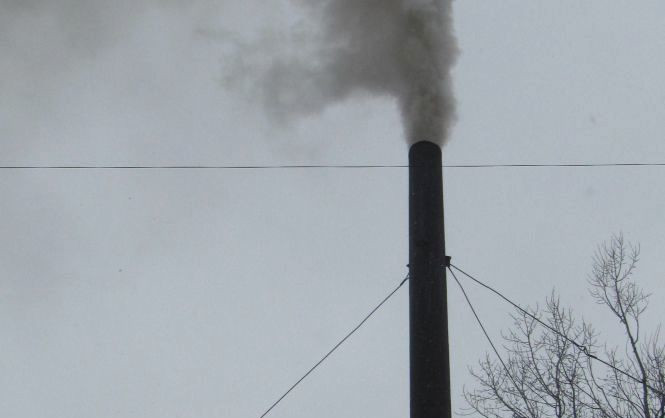
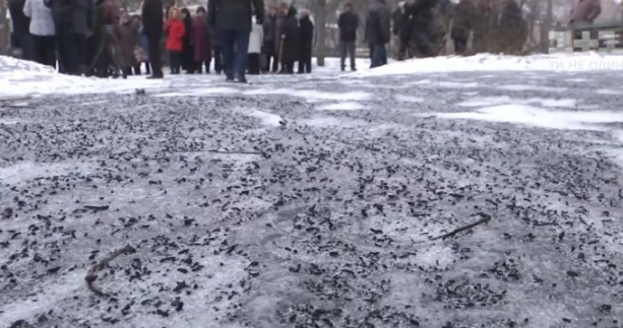
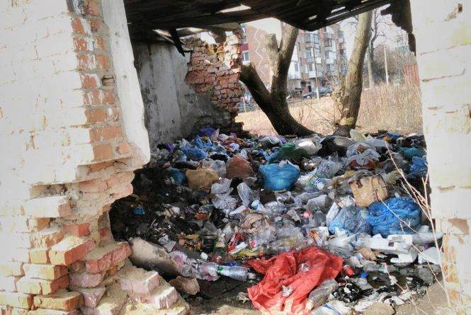

Ніщо в природі не зникає безслідно, крім навколишнього середовища
Л.Сухоруков
Термін «екологія» увів у науку німецький біолог Е. Геккель 1866 року. У вузькому значенні — це наука про взаємозв`язки. живих організмів між собою та з навколишнім середовищем. У широкому розумінні екологія охоплюе значне коло питань, пов’язаних з функціонуванням надорганізмових систем.
Тепер під терміном «екологія» часто розуміють увесь комплекс проблем, пов’язаних з охороною навколишнього середовища. Екологія як наука з основою для розробки певних природоохоронних заходів.
Як відомо, на живі організми впливають фактори зовнішнього середовища, або екологічні , які мають різну природу і специфічні за дією. Абіотичні фактори, або фактори неживої природи, - це температура, світло, вологість, тиск, радіоактивне випромінювання, вітер, сольовий склад води, рельєф мисцевості тощо. Вони можуть впливати на живі організми прямо чи опосередковано.
Біотичні фактори, або фактори живої природи - це форми впливу живих організмів один на одного. Безпосереднє живе оточення організму складае його біотичне середовище.
Антропічні фактори — це внесені у природу людською дяльністю зміни, що впливають на органічний свт. Саме антропічний фактор є причиною страждання навколишнього серудовища.
Складна радіаційна ситуація, що виникла у ряді районів України внаслідок аварії на Чорнобильській атомній електростанції, створила небезпеку для здоров’я людини, негативно впливае на спадкову основу. Тому оздоровчо-гігієнічний аспект охорони природи нині набуває виняткового значення.
У містах (наше не виняток) унаслідок збільшення забруднення атмосфери неухильно зростае кільльксть хворих на хронічний бронхіт, алергії, злоякісні захворювання бронхів і легенів. Всесвітня органзація охорони здоров`я розцінюе забруднення атмосфери як значну погрозу для життя людини і закликае вживати найсерйозніших заходів шодо цого охорони.